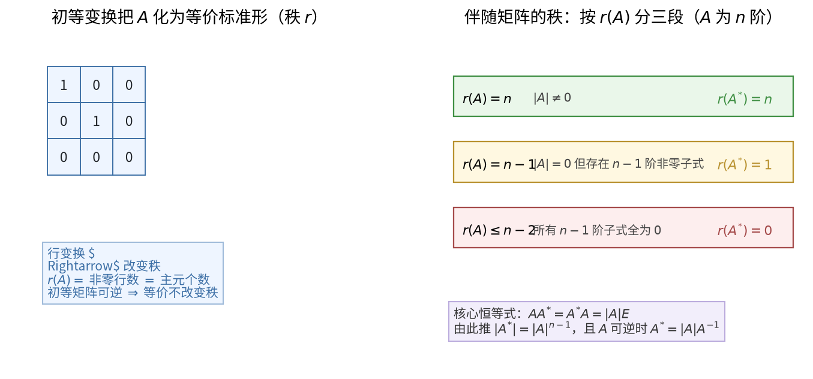

矩阵
考频统计
历年命题分布考察次数 3 次；涉及年份：2023、2024（2023—2024 年数二真题逐题定章统计）；分数占比约 24%；主要题型：选择、填空（伴随矩阵、秩、初等变换、可逆判定）。
核心讲解
定义 · 公式 · 适用条件【矩阵运算】
- 结合律成立：$(AB)C=A(BC)$，多个矩阵连乘时可按方便的顺序结合。
- 分配律成立：$A(B+C)=AB+AC$，$(A+B)C=AC+BC$。
- 交换律不成立：一般 $AB\neq BA$，一切「先左乘还是先右乘」的区别都源于此。
- 转置反序：$(AB)^{T}=B^{T}A^{T}$，转置后两个因子的顺序必须交换。
- 求逆反序：$(AB)^{-1}=B^{-1}A^{-1}$，前提是 $A$、$B$ 都 可逆。
- 零因子现象：$AB=O$ 推不出 $A=O$ 或 $B=O$，这是后面秩不等式与 $AB=O$ 型结论的出发点。
【核心公式】
$$ (AB)C=A(BC),\qquad (AB)^{T}=B^{T}A^{T},\qquad (AB)^{-1}=B^{-1}A^{-1} $$
【适用条件】
- 乘法要求左矩阵的 列数 等于右矩阵的 行数；
- 转置公式对任意可乘矩阵成立；
- 求逆公式要求 $A$ 与 $B$ 均 可逆（同阶方阵）；
- 使用「$AB=O\Rightarrow$ 秩不等式」时，必须补上三者的阶数关系。
⚠️ 易错点：把 $(AB)^{T}$ 写成 $A^{T}B^{T}$ 是最常见的符号错误。只要记住「转置和求逆都让因子反序」，两个公式一起记就不会混。
【逆矩阵与伴随矩阵】
- 伴随矩阵定义：$A^{*}=(A_{ji})$，即把每个元素换成它的 代数余子式 之后再 转置。
- 母公式：$AA^{*}=A^{*}A=|A|E$，关于伴随的一切结论都由它推出。
- 求逆公式：$|A|\neq 0$ 时 $A^{-1}=\frac{1}{|A|}A^{*}$。
- 行列式结论：$|A^{*}|=|A|^{n-1}$。
- 可逆的判据群：见下表，解题时按题目条件挑最好用的一条。
- 参数题与秩题的分工：算参数通常用 $|A|\neq 0$，讨论秩通常用 $r(A)=n$。
【核心公式】
$$ AA^{*}=A^{*}A=|A|E,\qquad A^{-1}=\frac{1}{|A|}A^{*},\qquad |A^{*}|=|A|^{n-1} $$
可逆的等价条件（$A$ 为 $n$ 阶方阵）：
| 等价说法 | 表达形式 | 最适用的题型 |
|---|---|---|
| 行列式 不为 0 | $\lvert A\rvert\neq 0$ | 含参数的方阵求参数范围 |
| 满秩 | $r(A)=n$ | 抽象矩阵、秩的讨论 |
| 初等矩阵之积 | $A=P_1P_2\cdots P_s$ | 初等变换与等价标准形 |
| 齐次方程组只有零解 | $Ax=0$ 仅有 $x=0$ | 解的结构、基础解系 |
| 列（行）向量组 线性无关 | $r(\alpha_1,\dots,\alpha_n)=n$ | 向量组相关性判定 |
| 与单位阵等价 | $A\cong E$ | 初等变换化简 |
| 特征值全 不为 0 | $\lambda_i\neq 0$ | 相似、特征值综合题 |
伴随矩阵的秩（$A$ 为 $n$ 阶方阵，$n\ge 2$）：
| $r(A)$ 的情形 | $r(A^{*})$ | 关键理由 |
|---|---|---|
| $r(A)=n$（$A$ 可逆） | $r(A^{*})=n$ | $\lvert A^{*}\rvert=\lvert A\rvert^{n-1}\neq 0$ |
| $r(A)=n-1$ | $r(A^{*})=1$ | $A^{*}\neq O$ 但 $A^{*}A=\lvert A\rvert E=O$ |
| $r(A)\le n-2$ | $r(A^{*})=0$，即 $A^{*}=O$ | 所有 $n-1$ 阶子式全为 $0$ |
【适用条件】
- 定义 $A^{*}=(A_{ji})$ 中 转置 这一步不能漏，漏掉就全盘出错；
- $A^{-1}=\frac{1}{|A|}A^{*}$ 要求 $|A|\neq 0$，即 $A$ 可逆；
- $|A^{*}|=|A|^{n-1}$ 与 $r(A^{*})$ 的三段结论都要求 $A$ 是 $n$ 阶方阵；
- $r(A)=n-1$ 时 $A^{*}\neq O$ 且 $r(A^{*})=1$，此时 $A^{*}$ 的每一行都是 $A^{*}A=O$ 所对应方程组的解。
⚠️ 易错点：把「$|A|=0$」直接当成「$A^{*}=O$」。正确说法是 $r(A)=n-1$ 时 $r(A^{*})=1$，只有 $r(A)\le n-2$ 时才有 $A^{*}=O$——三段情形必须分清楚。
【初等变换与秩】
- 秩的定义：$r(A)$ 是 $A$ 中 非零子式 的最高阶数。
- 秩的算法：$r(A)$ 等于行阶梯形中 非零行的行数。
- 行秩等于列秩：$r(A)$ 同时等于行向量组的秩与列向量组的秩。
- 初等变换不变秩：$P$、$Q$ 可逆 时 $r(PAQ)=r(A)$，这是「初等变换不改变秩」的一般形式。
- 三条件用：求秩、求逆、求极大无关组，都可以通过初等行变换一次完成。
【核心公式】
$$ r(PAQ)=r(A)\quad(P,Q\ \text{可逆}) $$
$$ r(A+B)\le r(A)+r(B),\qquad r(AB)\le\min\{r(A),\,r(B)\} $$
$$ AB=O\ \Longrightarrow\ r(A)+r(B)\le n\quad(A\ \text{为}\ m\times n,\ B\ \text{为}\ n\times s) $$
【适用条件】
- $r(PAQ)=r(A)$ 要求 $P$、$Q$ 都 可逆；
- $r(A+B)\le r(A)+r(B)$ 对同型矩阵成立，等号一般不取；
- $r(AB)\le\min\{r(A),r(B)\}$ 对任意可乘矩阵成立；
- $AB=O$ 型不等式中的 $n$ 是 中间维数（$A$ 的列数、$B$ 的行数），不是 $A$ 或 $B$ 的阶数。
⚠️ 秒杀技：见到 $AB=O$ 立刻写 $r(A)+r(B)\le n$；见到 $A^{*}\neq O$ 立刻把 $r(A)$ 锁定在 $n-1$。这两条能把抽象秩的填空题压缩成一步。
【分块矩阵】
- 分块乘法：把大矩阵按相容的方式分块后，乘法规则与小矩阵完全一致。
- 分块转置：转置的同时 交换块的位置，即把 $A$、$B$、$C$、$D$ 四块按 $\begin{pmatrix}A&B\\ C&D\end{pmatrix}^{T}=\begin{pmatrix}A^{T}&C^{T}\\ B^{T}&D^{T}\end{pmatrix}$ 重排。
- 分块对角求逆：主对角块各自求逆，副对角块照抄位置。
- 分块对角行列式：等于各主对角块行列式之连乘。
- 适用场景：矩阵阶数较高、出现明显零块或重复结构时，分块能把高阶运算降成低阶运算。
【核心公式】
$$ \begin{pmatrix} A & O \\ O & B \end{pmatrix}^{-1}=\begin{pmatrix} A^{-1} & O \\ O & B^{-1} \end{pmatrix},\qquad \begin{vmatrix} A & O \\ O & B \end{vmatrix}=|A|\cdot|B| $$
$$ \begin{pmatrix} A & C \\ O & B \end{pmatrix}^{-1}=\begin{pmatrix} A^{-1} & -A^{-1}CB^{-1} \\ O & B^{-1} \end{pmatrix} $$
【适用条件】
- 分块乘法要求相应块的 阶数相容；
- 分块求逆要求每个对角块都 可逆；
- 分块行列式的干净结论只在 分块三角或分块对角 时成立；
- 副对角块情形要先通过换行换列把零块挪到正确位置，换一次记一个符号。
⚠️ 易错点：把分块行列式一律写成 $|A||B|-|C||D|$，等于把二阶行列式展开式硬套到分块矩阵上。一般情形必须回到拉普拉斯展开或先消去一角。
关键结论速记
考前最后扫一眼- $(AB)^{-1}=B^{-1}A^{-1}$，$(AB)^{T}=B^{T}A^{T}$ —— 一律反序，逆与转置混合时要先转置后取逆再反序
- $A$ 可逆 $\iff |A|\neq0 \iff r(A)=n \iff Ax=0$ 仅有零解 —— 可逆判定的四个同义说法
- $AA^{}=A^{}A=|A|E$，$|A^{}|=|A|^{n-1}$，$|A|\neq0$ 时 $A^{-1}=\frac{1}{|A|}A^{}$ —— 伴随矩阵的两条母公式
- $r(A^{})=n\ (r(A)=n)$，$=1\ (r(A)=n-1)$，$=0\ (r(A)\le n-2)$ —— 伴随矩阵秩的三段公式，$|A|=0$ 并不等于 $A^{}=O$
- $r(A+B)\le r(A)+r(B)$，$r(AB)\le\min{r(A),r(B)}$ —— 和与积的秩只能变小
- $AB=O \Rightarrow r(A)+r(B)\le n$ —— 零乘积给出的秩约束，$n$ 是 $A$ 的列数（即 $B$ 的行数）
- $P^{T}AP$ 与 $A$ 同秩 —— 可逆阵左乘右乘不改变秩，是初等变换不改变秩的一般形式
示意图
几何直观与判定流程
n columns r(A) = n -> r(A*) = n
+-------------------+ r(A) = n-1 -> r(A*) = 1
| Er | O | r rows r(A) <= n-2 -> A* = O
|-------+-----------|
| O | O | det(A) != 0 => A* = det(A) * inv(A)
+-------------------+ det(A) = 0 and A* != O is possible
rank = r
equivalent normal form
图左是 $m\times n$ 矩阵经初等变换得到的等价标准形，其中 $r=r(A)$；图右列出伴随矩阵的秩随 $r(A)$ 变化的三段结论。
+---------+---------+---------+---------+
| A11 | A21 | A31 | A41 | <- row 1 of adj(A)
+---------+---------+---------+---------+
| A12 | A22 | A32 | A42 | Aij = (-1)^(i+j) * Mij
+---------+---------+---------+---------+
| A13 | A23 | A33 | A43 | adj(A) = transpose of
+---------+---------+---------+---------+ the cofactor matrix
| A14 | A24 | A34 | A44 |
+---------+---------+---------+---------+
查看该图源码
flowchart TD
A["n 阶矩阵 A"] --> B{"|A| = 0 ?"}
B -->|"否"| C["A 可逆, r(A) = n, r(A*) = n"]
B -->|"是"| D{"r(A) 与 n-1 比较"}
D -->|"r(A) = n-1"| E["存在 n-1 阶非零子式, r(A*) = 1"]
D -->|"r(A) <= n-2"| F["所有 n-1 阶子式全为零, A* = O"]
C --> G["用 A* = |A| * A^-1 求伴随"]
E --> H["用 A A* = O 求 A* 的列向量"]
F --> I["伴随矩阵为零矩阵"]
易错点
错在哪 · 正确是什么- 由 $AB=O$ 直接推出 $A=O$ 或 $B=O$。 错在把数的乘法性质搬到矩阵上。正确结论只有秩的约束 $r(A)+r(B)\le n$。例如 $A=\begin{pmatrix}1&0\0&0\end{pmatrix}$、$B=\begin{pmatrix}0&0\0&1\end{pmatrix}$ 时 $AB=O$ 而两者都非零；进一步，若还知道 $A\neq O$ 且 $B\neq O$，只能推出 $r(A)
- 把 $A^{*}$ 写成代数余子式矩阵本身，漏掉转置。 错在记成 $A^{}=(A_{ij})$。正确的是 $A^{}=(A_{ji})$；相应地 $(A^{T})^{}=(A^{})^{T}$，而 $(kA)^{}=k^{n-1}A^{}$，指数是 $n-1$ 不是 $n$。
- 认为 $|A|=0$ 时一定有 $A^{*}=O$。 错在把行列式为零与伴随为零等同。正确的是 $r(A)=n-1$ 时 $A^{}\neq O$（此时 $r(A^{})=1$），只有 $r(A)\le n-2$ 才有 $A^{*}=O$。
- 求逆或转置时顺序写错。 错在写 $(AB)^{-1}=A^{-1}B^{-1}$ 或 $(AB)^{T}=A^{T}B^{T}$。正确是一律反序：$(AB)^{-1}=B^{-1}A^{-1}$，$(AB)^{T}=B^{T}A^{T}$。
真题示例
题干 · 解析2024 年数二第 9 题（单项选择题，5 分）
设 $A$ 为四阶矩阵，$A^{*}$ 为 $A$ 的伴随矩阵，若 $A(A-A^{*})=O$，且 $A\neq A^{*}$，则 $r(A)$ 的可能取值为（ ）
A. 0 或 1 B. 1 或 3 C. 2 或 3 D. 1 或 2
解析：第一步，化简条件。由 $AA^{*}=|A|E$：若 $|A|\neq0$，则 $A$ 可逆，在 $A(A-A^{*})=O$ 两边左乘 $A^{-1}$ 得 $A=A^{*}$，与 $A\neq A^{*}$ 矛盾，故 $|A|=0$，于是 $AA^{*}=O$，题设条件化为 $A^{2}=O$。
第二步，定出 $r(A)$ 的上界。设 $A^{2}=O$，把 $A$ 按列分块为 $A=(\alpha_1,\alpha_2,\alpha_3,\alpha_4)$，则每个 $\alpha_j$ 都满足 $A\alpha_j=0$，即 $\operatorname{Col}(A)\subseteq\operatorname{Null}(A)$，取维数得 $r(A)\le 4-r(A)$，故 $r(A)\le 2$。这一步同时排除了 $r(A)=4$（此时 $A$ 可逆，与 $|A|=0$ 矛盾）与 $r(A)=3$：秩 3 时 $\operatorname{Null}(A)$ 只有一维，而 $\operatorname{Col}(A)$ 有三维，包含关系要求 $3\le 1$，不可能。
第三步，验证 $r(A)=1$ 与 $r(A)=2$ 都能取到。取 $A=\operatorname{diag}(1,0,0,0)$，sympy 复算 $A^{*}=O$、$A^{2}=O$、$A\neq A^{*}$，此时 $r(A)=1$；取 $A=\begin{pmatrix}0&1&0&0\\0&0&0&0\\0&0&0&1\\0&0&0&0\end{pmatrix}$，sympy 复算同样有 $|A|=0$、$A^{*}=O$、$A^{2}=O$、$A\neq A^{*}$，而 $r(A)=2$。综上 $r(A)$ 的可能取值为 $1$ 或 $2$，选 D。